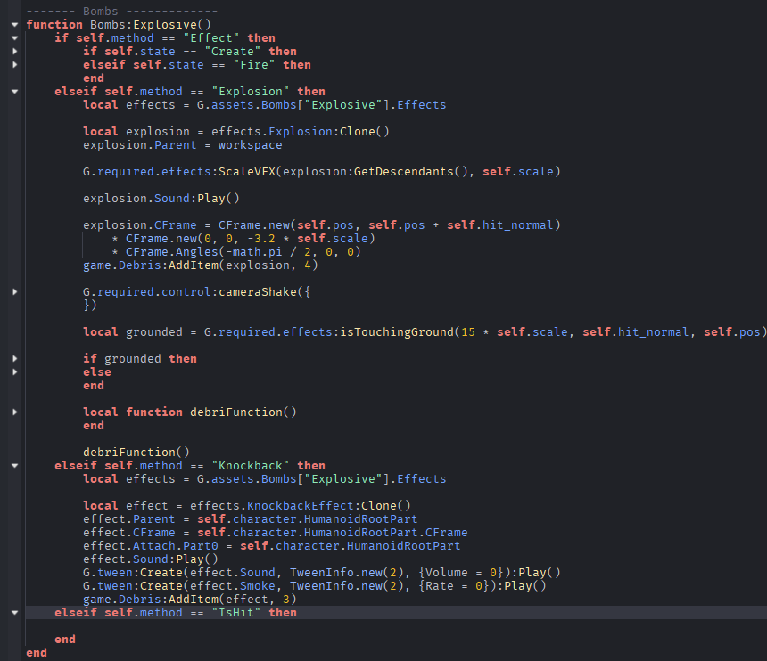
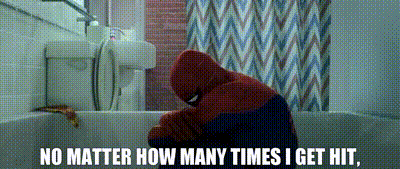

My Strongest Traits and Hobbies
1. Perfectionism
This trait is a double edged sword. I can never be satisfied with anything for a long time, however, it does make me strive for the best and not mediocrity. Sometimes it helps me and sometimes it screws me over, especially when i want the best of something but dont have the skills to achieve it.
This trait affects my school life mostly negatively but my other parts positively. I usually procrastinate on my school work because I always try to do my best on the previous assignment. I can't move on unless I feel satisfied at the moment.
2. Coding Game Design
I do this in my free time and also for commissions to earn money to help my mother and I stay afloat. I have 6 years experience in thsi and started when the pandemic first began because I had nothing else to do.
Here are some cool showcase of my work


It has both positive and negative effects on my school and academic life. Negatives being that I have a tendency to keep working on it and procrastinate. I admit that i did it with this assignment and started late. However I do commissions and is able to pay for my tuition at times, I'm also really knowledgable in coding so it has helped me many times at UTECH.
3. Resilience
I believe I am resilient, despite struggling to make ends meet, I still have ambitions and look towards my future. I want to perfect my skills in programming so that I won't have to worry about financial problems anymore. No matter how many countless nights i struggle to achieve one thing, doing research, scrapping over and over, sometimes even telling myself I'll quit, I still keep going forward and for that I am proud of myself.
This has been purely positive on my academic life if i had listen to many and not believed in myself I wouldve dropped out of UTECH already. the fact that I'm still here going strong is testiment to my resilience and why I should keep going.
My Hero
Spider-man
Yes spider-man is a fictional hero but he is well known and loved throughout the world, especially through the movies about him. I dont know much about his origins but he first appeared long ago in a marvel comic as a side character but then exploded in popularity. Movies about him have grossed so many and are still beloved my many including myself, he is the staple of never giving up and always getting back up on your feet despite the odds which i can relate to.
Favourite Scene

"Anyone Can Wear The Mask" "With Great Power Comes Great Responsibility" "A Loss Doesn't Make You Lesser, It Makes You Real"
These quotes resonate with me alot because the last few years have been really tough for me ever since I started university. He has been my main inspiration to keep going because he always move forward even if each step takes great effort and time to do.
He is the epitomy of resilience, discipline and responsibility which i strive to be, he has his faults too which makes him more human in my eyes despite the fact that hes fictional.
LLMs: A Tool, Not a Crutch
To me, saying that “LLMs such as ChatGPT, Claude, and Copilot must be used as a tool, not a crutch” basically means I should be able to use AI without needing AI. I use it to help me with things I'm already doing, not to do everything for me. If I reach a point where I can't get anything done without asking an AI first then I feel like I'm using it too much. I would rather use it to improve the skills I already have and make certain things faster. One thing I use LLMs for a lot as a student is research. It can save me a lot of time finding information, but I learned pretty quickly not to just believe whatever it tells me. Usually I'll ask for sources and then go to the links myself because I've had AI give me information that sounded completely believable and was just wrong. That's probably one of the biggest problems with it because sometimes the answer doesn't sound wrong at all. UNESCO (2023) talks about this too and warns that information from generative AI can be unreliable, so people still need to be critical of what it gives them. I think that's important because if I'm doing research I should still know where my information actually came from. I probably use AI the most with programming and game development though. Sometimes I'll be stuck on a bug and after staring at the same code for way too long I'll just ask an LLM to look at it. Sometimes it notices something I completely missed and sometimes its solution is honestly useless. I also use generative AI for concept art because I can have an idea in my head and know what I want, but actually getting that idea out visually is something I struggle with. I don't normally take what the AI gives me as the final thing though. It's more like something I can look at and say alright, this part works, this part doesn't, and then go from there. It's pretty much the same with generated code. I'll take parts of it, change things, clean it up or rewrite sections to fit what I'm actually doing. There have been times where I've changed the code so much that I end up deleting basically everything the AI originally gave me and writing it myself. That doesn't mean it was completely useless though because sometimes just seeing another way of approaching the problem is enough to get me unstuck. I've also had the complete opposite happen where AI made the problem more annoying. I've gotten generated code that was wrong and spent way too much time trying to figure out why it wasn't working, only to eventually go learn the topic myself because I couldn't trust what it was giving me anymore. Stuff like that is why I think knowing how to do something yourself is still more important. If you don't understand the answer you're getting then you also don't really know when the answer is wrong. An et al. (2026) says that “AI use is not inherently detrimental,” but their research also shows the problems that can happen when students start depending on AI instead of actually thinking through problems themselves. There are also some situations where I just don't think students should be using LLMs. If I'm doing a test or quiz that's supposed to show what I know, then having ChatGPT answer the questions for me defeats the whole point. I might get a better grade but I didn't really prove that I knew anything. Same thing with assignments. If somebody generates the entire assignment, copies it and submits it without even understanding what they're submitting, they technically finished it I guess, but they didn't really learn much from doing that. I think a good way for me to look at it is what would happen if all these LLMs just disappeared tomorrow. I'd definitely be annoyed because some things would take me longer, especially research and brainstorming, but I could still program and do my university work. Coming up with ideas would probably be the part I'd miss the most because creativity isn't always my strong point, but I'd manage. If I couldn't do any of those things anymore without AI then I'd probably have to admit I was relying on it way too much. So for me, using AI as a tool and not a crutch doesn't mean barely using it or pretending it isn't useful. I use it pretty often and it saves me time. I just don't want it doing so much for me that my own skills start getting worse or I stop learning things because it's easier to ask. I want to be able to use AI when it helps and still be completely fine when I don't have it. That's really the difference to me.
References
- An, C., Lu, K., & Yang, J. (2026). The dependency trap: A systematic review of the contributing factors and consequences of student over-reliance on generative AI in higher education. Humanities and Social Sciences Communications, 13, Article 1604. https://doi.org/10.1057/s41599-026-08959-2
- UNESCO. (2023). Guidance for generative AI in education and research. UNESCO. https://unesdoc.unesco.org/ark:/48223/pf0000386693